O conteúdo das funções logarítmicas foi o que eu mais tive dificuldade no ano todo. Porém consegui entender um
pouco mais estudando para a prova.
Primeiramente entendi que a função logarítmica é inversa a função exponencial (que foi estudada no outro
trimestre). "Por exemplo, enquanto uma função exponencial de base 2 leva 3 a 8, uma
função logarítmica de base 2 leva 8 a 3", tirei esta frase do material da professora pois explicou bem esta
relação.
Depois percebi que para resolver a função, basta substituir a parte f(x) por 0, e assim resolver o logaritmo
igualando ao 0 e achando a variável. Abaixo estão alguns exemplos resolvidos em aula:
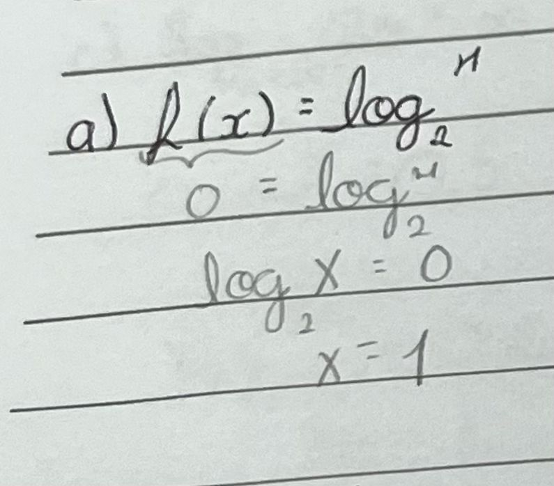
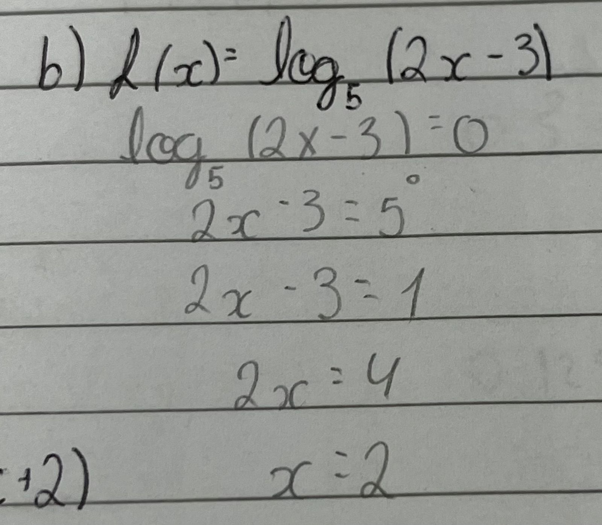
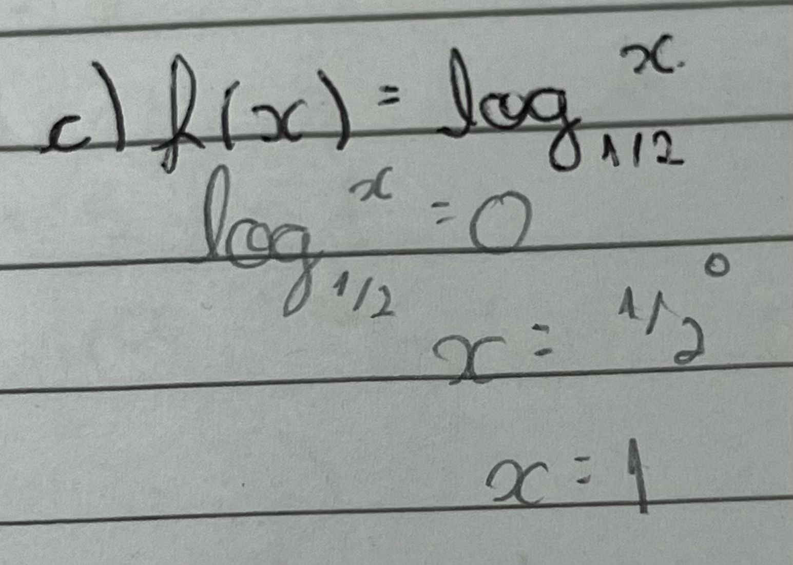
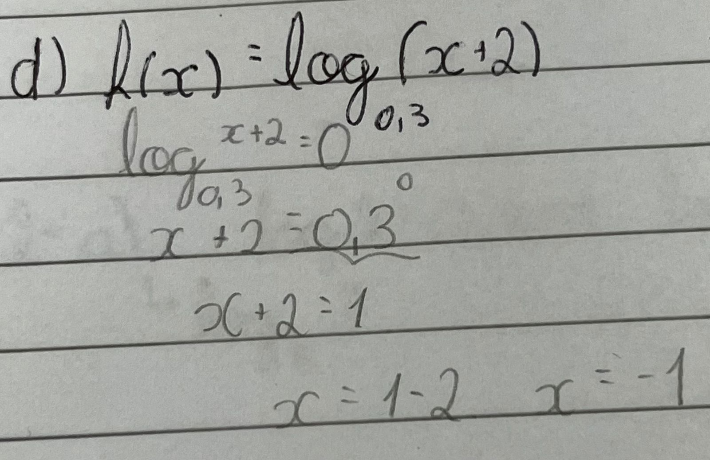
Sobre a construção do gráfico, também senti uma leve dificuldade, mas seguindo os passos que estavam no material
consegui me localizar melhor.
1° passo: Analisar o crescimento / decrescimento.
2° passo: Determinar o conjunto domínio.
3° passo: Encontrar as interseções com os eixos.
4° passo: Encontrar alguns pontos do gráfico.
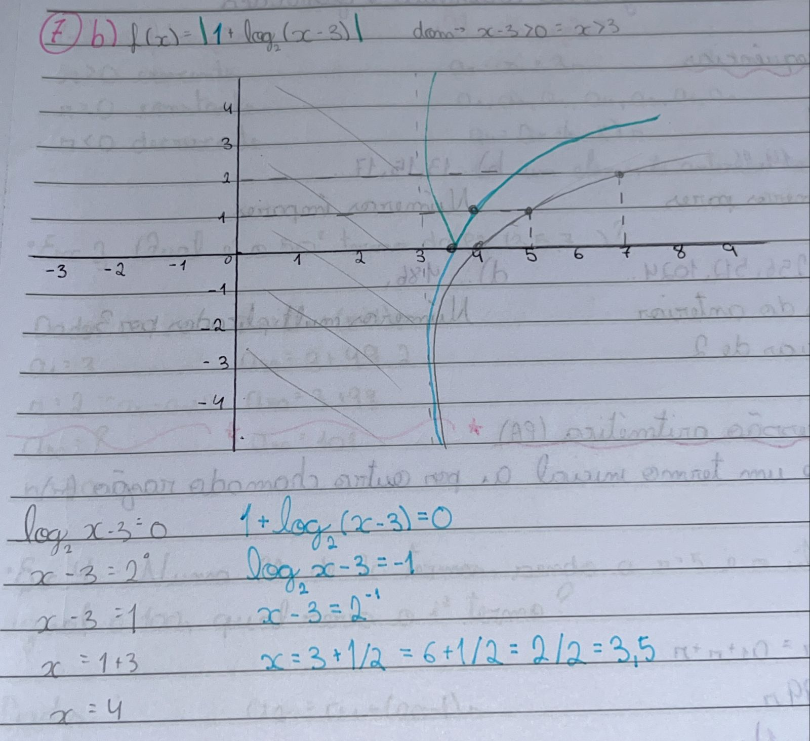
O gráfico acima é de uma questão da prova que tive dificuldade, mas depois na correção consegui entender.
Primeiramente foi analisado o crescimento, se a base 2 > 1 seria crescente e se 0 < 2 < 1 seria decresente
(nesse caso é crescente). Depois foi analisado o domínio -> x - 3 > 0 = x > 3. Após, para encontrar a
interseção com o eixo x basta achar as raízes e depois a interseção com o eixo y e montar o gráfico.
Funções modulares
Para mim, a parte teórica das funções modulares foi fácil de entender, principalmente as equações.
Entendi que o número que está dentro do módulo deve ser considerado positivo e negativo, assim a
equação ou o valor da variável pode ser diferente dependendo do sinal.
Exemplos do material da professora que resolvi:
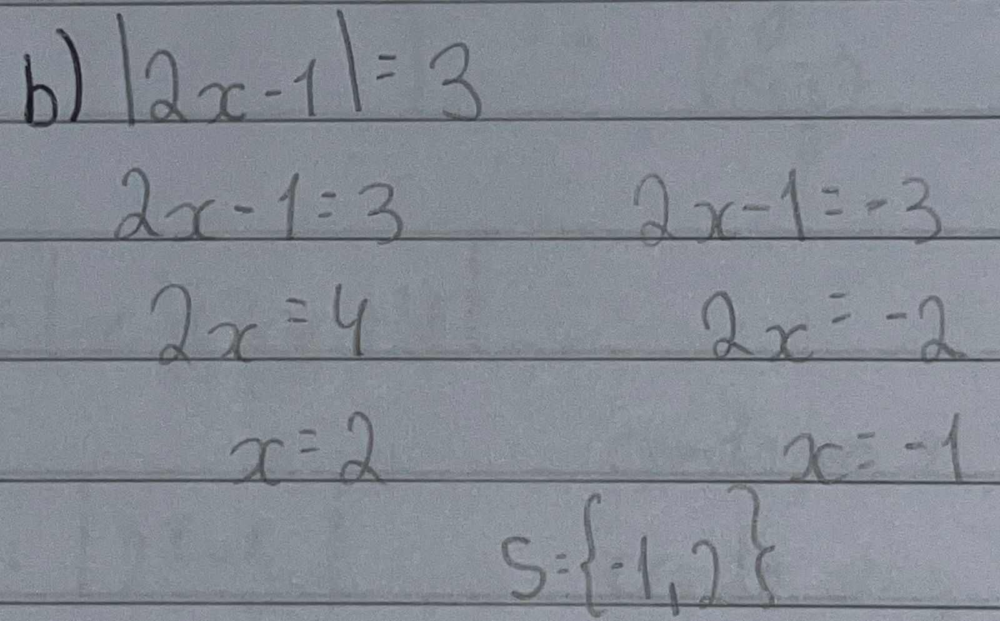
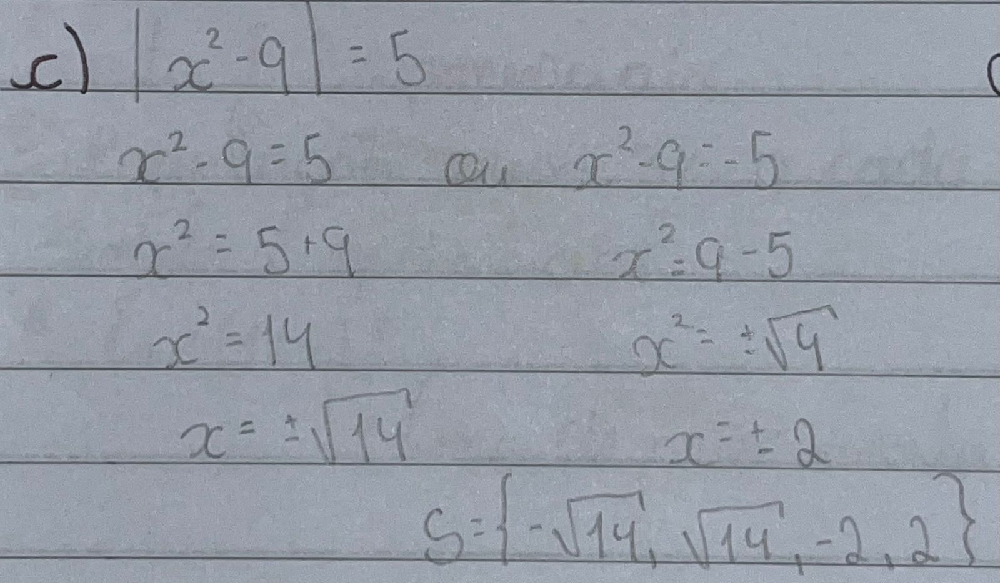
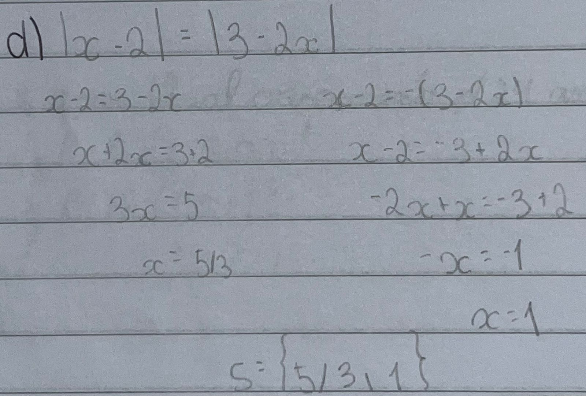
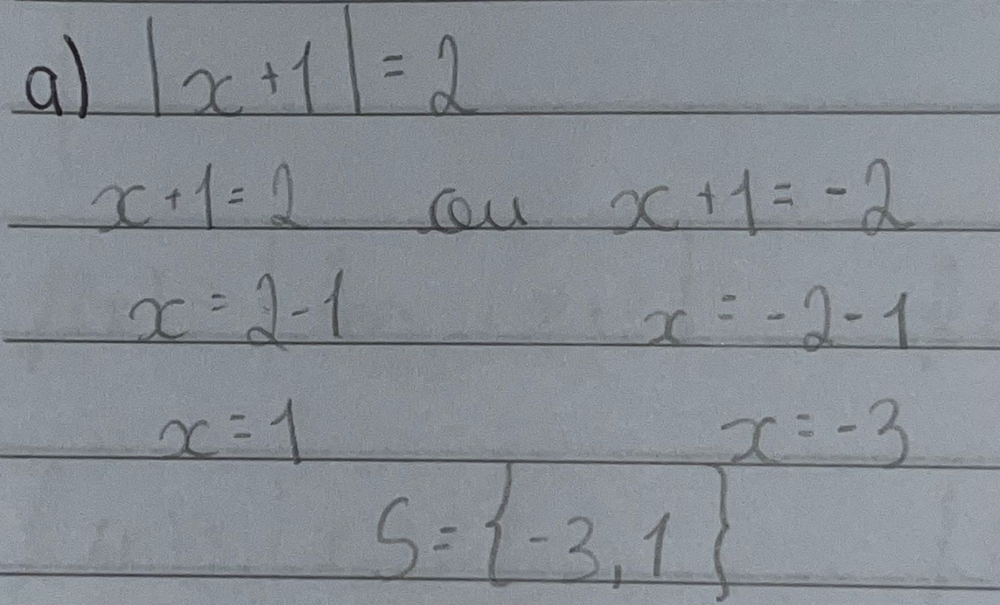
Na primeira vez que falamos do gráfico de uma função modular, fiquei um pouco confusa, mas depois
fazendo
os exercícios e estudando para a prova consegui entender melhor. Para me ajudar na prova fiz um resumo e
nele
copiei o passo a passo do material da professora que achei importante e me auxiliou na hora da
construção dos
gráficos:
1° passo: Fazer o gráfico da função que está DENTRO do módulo.
2° passo: Refletir a parte que tem y negativo para y positivo
3° passo: Se tiver algum número somando ou subtraindo fora do módulo, mover o gráfico para
cima ou
para
baixo.
4° passo: Se a função modular cruzar o eixo x em outros valores, basta
igualar a função a zero e encontrar as novas raízes.
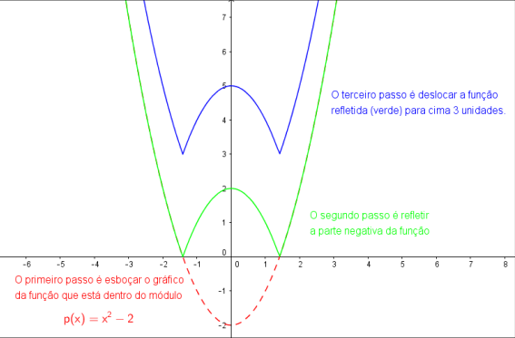
Gráfico da função p(x) = |x^
2 − 2| + 3. Também desenhei este gráfico no meu resumo. Primeiro desenhei a parte da função que estava
dentro do módulo p(x)=x^2-2, como fazíamos nas funções exponenciais. Depois refleti a parte negatica
para positiva. Depois só desloquei a função refletida 3 unidades para cima, já que fora do módulo está
somando +3
PA & PG
A Progressão Aritmética (PA) resumidamente, é a soma de um termo inicial (a1) por outro chamado
razão
(r). Existem várias formas para descobrir a razão ou os termos de uma PA. Uma fórmula para descobrir a
razão é
𝒓 = 𝒂𝒏 − 𝒂𝒏−1. E a fórmula do termo geral é 𝒂𝒏 = 𝒂𝟏 + (𝒏 − 𝟏)r, sendo:
𝑎1 = 𝑝𝑟𝑖𝑚𝑒𝑖𝑟𝑜 𝑡𝑒𝑟𝑚𝑜;
𝑎𝑛 = 𝑡𝑒𝑟𝑚𝑜 𝑔𝑒𝑟𝑎𝑙;
𝑛 = 𝑛ú𝑚𝑒𝑟𝑜 𝑑𝑒 𝑡𝑒𝑟𝑚𝑜𝑠 𝑜𝑢 𝑝𝑜𝑠𝑖çã𝑜 𝑑𝑜 𝑡𝑒𝑟𝑚𝑜;
𝑟 = 𝑟𝑎𝑧ão
Temos uma classificação das PAs, que determina como ela cresce.
Crescente: r > 0
Constante: r = 0
Decrescente: r < 0
Abaixo coloquei dois exemplos de questões com PA que resolvi em meu caderno:
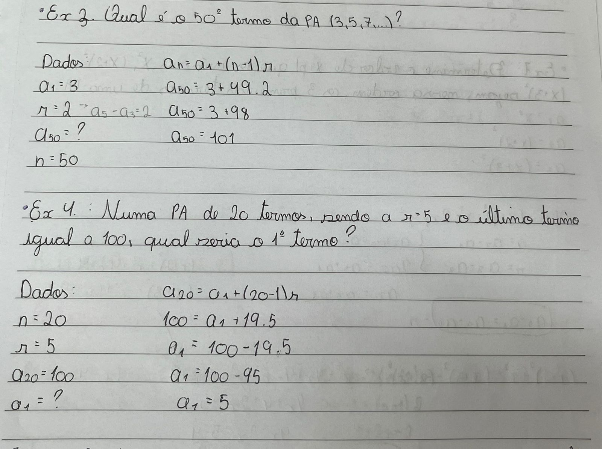
Relação entre PA e função afim:
Vamos supôr que exista uma PA com os números (1, 3, 5, 7, 9...). Estes números seriam o eixo y do
gráfico da
função afim. Agora, os termos a1, a2, a3, a4 e a5 seriam no eixo x para formar o gráfico. Abaixo está
uma foto
retirada do material da professora de como ficaria o gráfico:
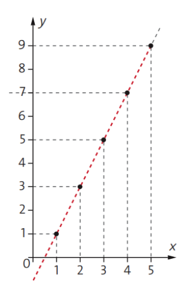
Interpolação Aritmética: inserir/encaixar meios aritméticos (k) entre os dois extremos com n = k + 2. Se
os dois extremos forem 1 e 2, por exemplo, os meios dentro deles serão em fração ou decimais. Para descobrir a
razão, basta utilizar a fórmula do termo geral, como mostra o exercício abaixo:
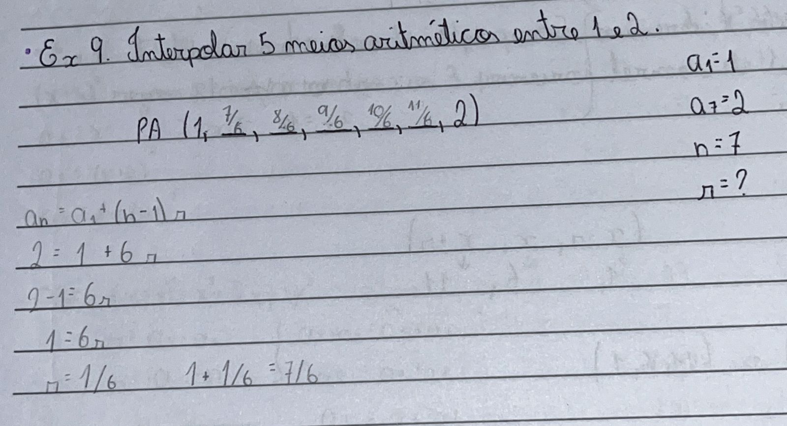
Soma de uma PA finita: existe uma fórmula para somar os termos de uma PA sem ter que somar um por um:
Sn = (a1 + an)n / 2. O exemplo abaixo feito no meu caderno mostra o desenvolvimento de uma questão utilizando
esta fórmula
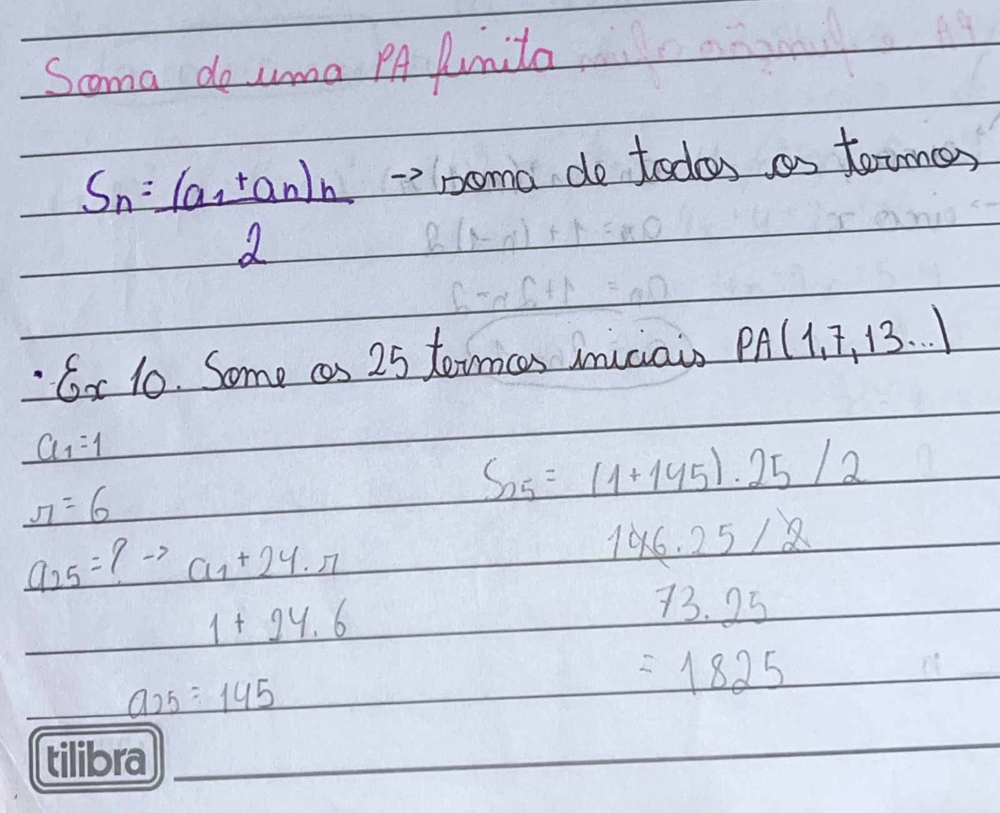
Progressão Greométrica (PG): "sequência de números em que
cada termo, a partir do segundo, é o produto do anterior por uma
constante dada 𝑞.", ou seja, resumidamente é a multiplicação de um termo pelo outro. A fórmula do termo geral
é: an = a1 . q ^n-1
Para as PGs, também existem classificações (tirei do material da professora):
Crescente: cada termo é maior do que o anterior.
PG com termos positivos: 𝑞 > 1.
PG com termos negativos: 0 < 𝑞 < 1.
Constantes: cada termo é igual ao anterior.
PG com todos os termos nulos: 𝑎1 = 0 𝑒 𝑞 𝑞𝑢𝑎𝑙𝑞𝑢𝑒𝑟.
PG com termos iguais e não nulos: 𝑎 ≠ 0 𝑒 𝑞 = 1.
Decrescente: cada termo é menor que o anterior.
PG com termos positivos: 0 < 𝑞 < 1
PG com termos negativos: 𝑞 > 1
Alternantes: cada termo tem sinal contrário ao do termo anterior. Isso
ocorre quando 𝑞 < 0.
Estacionárias: Apenas o primeiro termo é diferente de zero: 𝑎1 ≠
0 𝑒 𝑞 = 0.
Relaçao entre PG e funções exponenciais: Na PG, cada termo é obtido multiplicando o anterior por uma
constante
(razão da PG). A
expressão para o termo geral de uma PG é semelhante à forma de uma função exponencial. Assim, uma PG pode ser
representada como uma função exponencial quando seus termos são expressos em termos de uma base elevada a uma
potência, como mostra o gráfico abaixo (retirado do site InfoEscola):
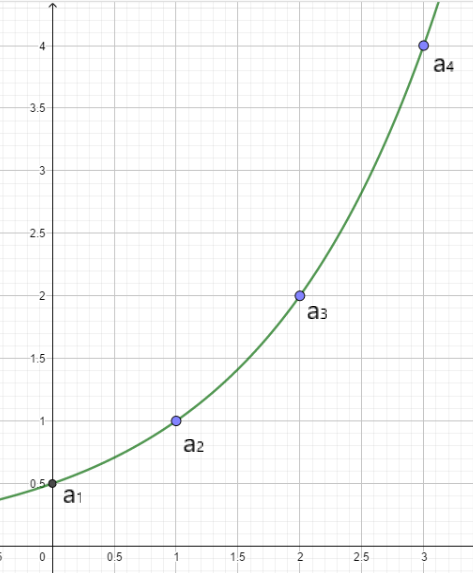
Interpolação Greométrica: a interpolação de PG utiliza a mesma fórmula que a de PA, então por isso não
irei me aprofundar nessa parte do conteúdo!
Soma dos termos de uma PG finita: existe uma fórmula para somar os termos de uma PG sem ter que somar um
por um:
Sn = a1 . 1 - q^n / 1 - q. Assim como mostra o exemplo abaixo:
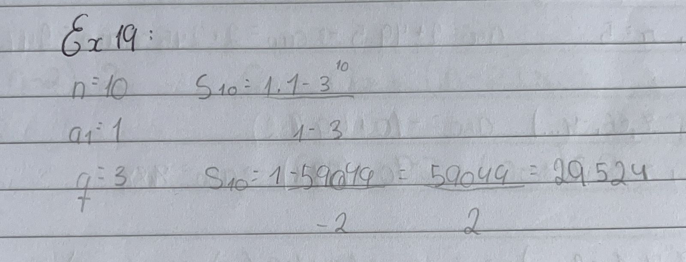
Soma de uma PG infinita: Resumindo, para calcular a soma de uma PG infinita, você precisa saber o
primeiro termo (a1) e a razão (r). Se ∣r∣ for menor que 1, você pode usar a fórmula mencionada para encontrar a
soma infinita da PG.
𝑺𝒏 =
𝒂𝟏 /
𝟏 − 𝒒
𝒑𝒂𝒓𝒂 − 𝟏 < 𝒒 < 2
Matemática Financeira
Já estudei esse conteúdo em outro ano, mas sempre senti um pouco de dificuldade, inclusive este ano. Eu
entendi que a Matemática Financeira é um ramo da matemática que lida com o estudo do dinheiro e seu
valor ao longo
do tempo. Ela é aplicada em diversas situações financeiras, tanto em nível pessoal como em contextos
empresariais. As principais noções abordadas em aula foram (tirado do material da professora):
Capital Inicial, Principal ou Valor Presente:
É o valor inicial de um empréstimo ou aplicação, sobre o qual irão incidir
os juros.
Símbolos: C, P ou PV (Present Value)
Prazo:
É o tempo de duração do empréstimo ou do investimento. Pode ser medido
em dias, meses, trimestres, semestres, anos, etc.
Símbolo: n
Juro:
É o preço (em Reais) pago pelo aluguel, ou empréstimo, do dinheiro (do
capital). É também o rendimento do dinheiro aplicado.
Símbolo: J
Taxa de Juros:
É a taxa percentual ou unitária do rendimento do capital ou pagamento
pelo uso do capital, numa unidade de tempo (ao dia, ao mês, ao ano,...)
Símbolo: i.
Taxa percentual de juros: 5 %.
Taxa unitária de juros: 0,05.
Montante ou Valor Futuro:
É o valor total a ser pago ou recebido com a finalidade de quitar um
empréstimo. É o valor final de uma aplicação.
Símbolo: M, S ou FV (Future Value).
Fórmula:
M = P + J
Regime de Capitalização:
Ato de adicionar juros ao capital.
Capitalização Simples -> Juros Simples.
Capitalização Composta -> Juros Compostos.
Capitalização Simples:
É uma função com crescimento
linear
Capitalização Composta:
É uma função com crescimento
exponencial
JUROS SIMPLES: age sempre sobre o capital inicial. Fórmulas:
Cálculo dos juros: J = C . i . n
Montante: M = C (1 + in)
Exemplo que resolvi utilizando estas fórmulas:
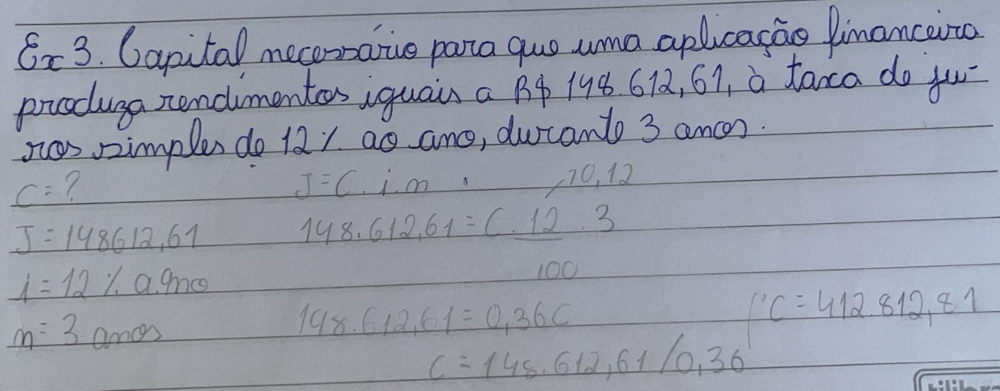
Em minha opinião, para resolver estes problemas não há muito segredo, é só aplicar as fórmulas e assim
vai indo...
Relaçao entre Juros Simples e função afim: Juros simples podem ser representados por uma função
afim, onde o montante de juros (
J) é expresso como J(t)=P⋅r⋅t, com P como principal, r como taxa de juros e t como tempo. Pois como os
juros simples crescem de forma linear, pode ser representado por função afim, como mostra o seguinte
gráfico (tirado do Google):
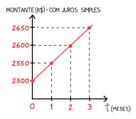
JUROS COMPOSTOS: eu entendi que os juros compostos são uma forma de cálculo de juros em que o
montante acumulado não apenas aumenta com base no capital inicial, mas também sobre os juros acumulados
ao longo do tempo. O montante é o mesmo definido para os juros simples, M = J + C
Quando temos prazos e taxas com unidade de tempo diferente, em juros simples e compostos, basta escolher um
e transformá-los para que fiquem iguais nesse sentido, e assim resolver o resto do problema.
Relação entre juros compostos e funções exponenciais: a cada período de capitalização, o rendimento é maior que o
anterior. Assim, o gráfico formaria uma curva, como em uma função exponencial. A imagem abaixo mostra um
exemplo dessa relação, que fiz no atendimento junto com a professora: